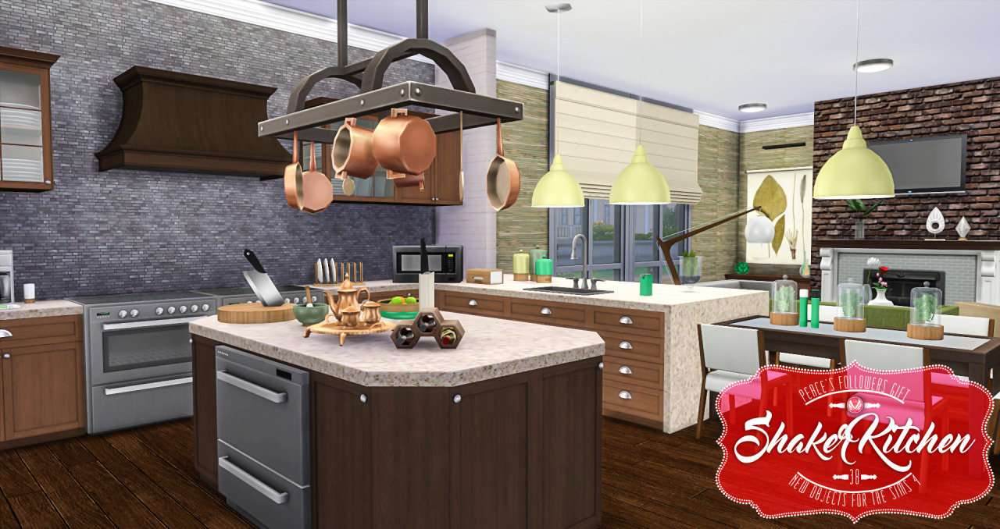
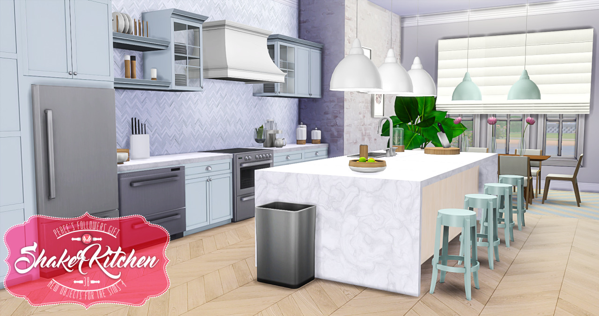
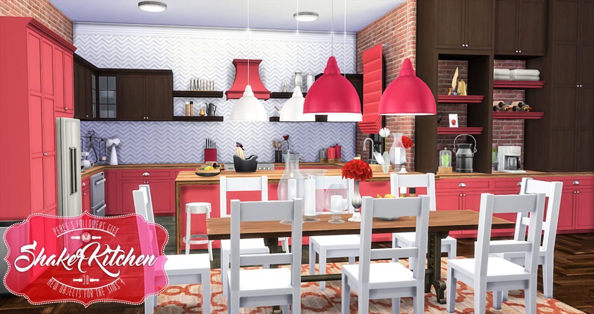
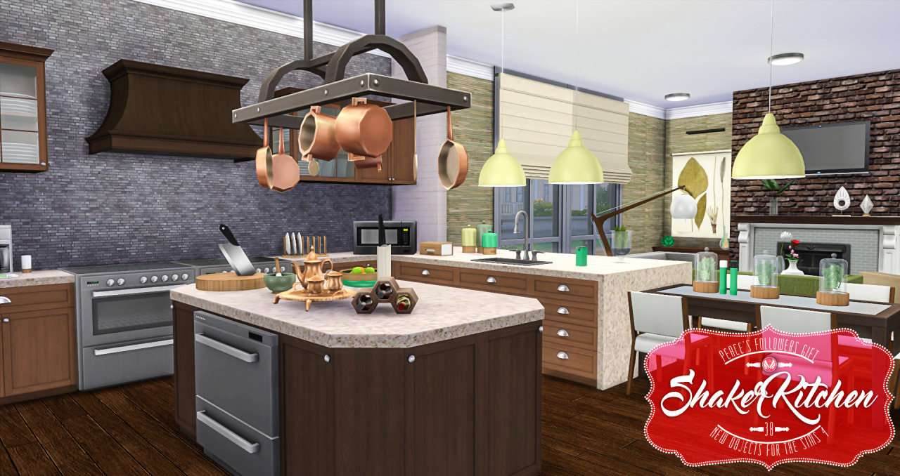
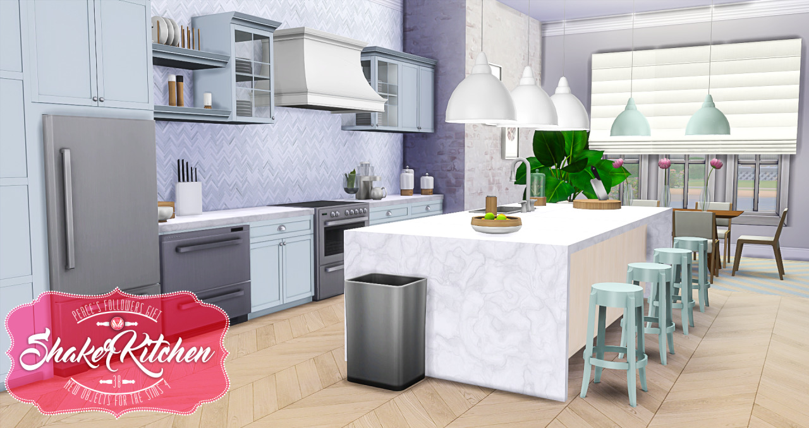
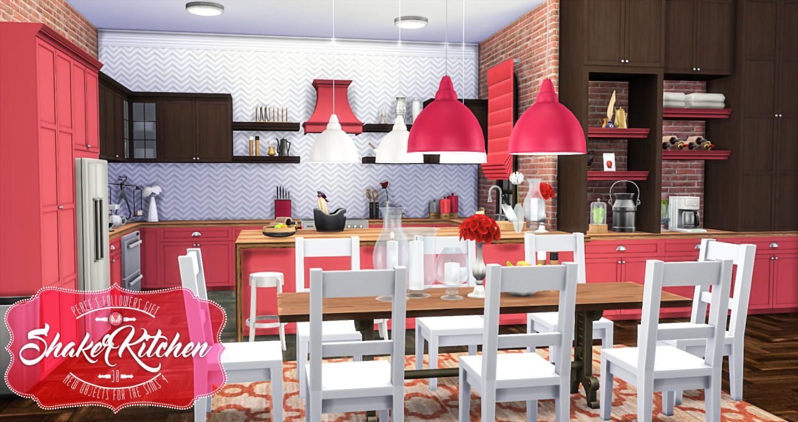
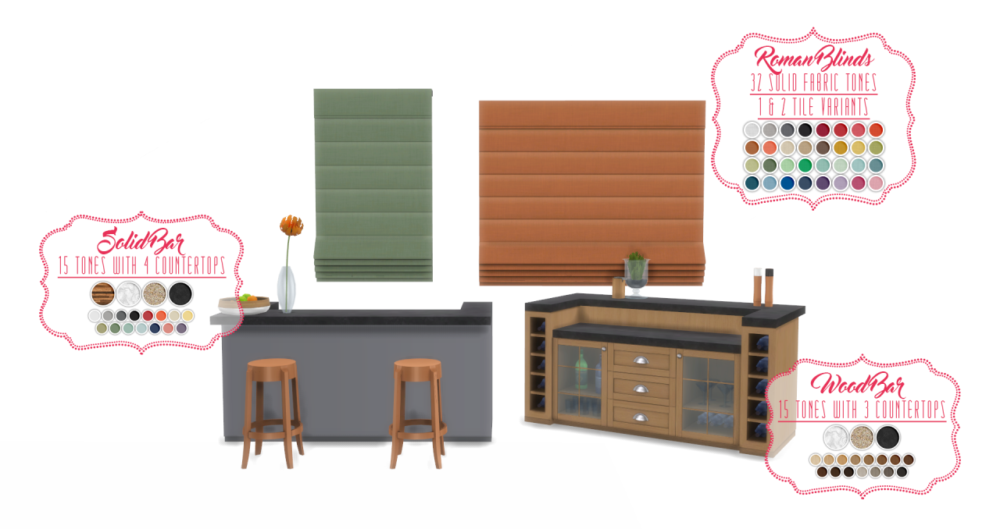
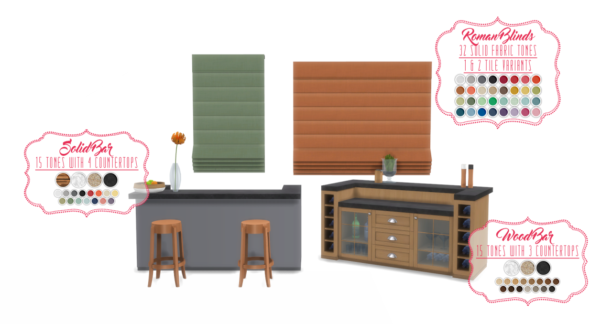

6/23/2018


peacemaker-ic
With all the building I have been doing in Windenburg, it has shown me just how much I needed to create some more classic-contemporary furniture that could be used in these coastal homes. I love Hamptons design, so I went about creating my own set of furniture and decor inspired by this style. The last classic/contemporary set I made was my Shaker kitchen which this is designed to be used with, along with my Bayside Bedroom. I do plan to make more furniture with less of a modernist feel, and this is the latest set with that goal in mind. I hope you all enjoy it as much as me.
Due to the length of these posts and for ease of updating, you can find the download and info under the cut.
 







 
